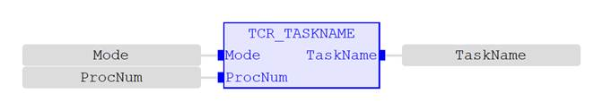
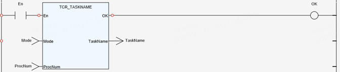

System Parameter.
Get the name of the task running in the current or specified process.
|
Mode : INT; |
Work mode: 0 - Get the task name of the current process. 1 - Get the task name of the specified process. |
|
ProcNum : INT; |
Specify process number. (Ignored when using mode 0) |
|
TaskName : STRING; |
Return the name of the task. |
Return the name of the task running in the current or specified process.
If the value of the input parameter ‘Mode’ or ‘ProcNum’ is out of parameter range, the value of ‘TaskName’ is an empty character and the return value of TCR_ErrorID is 19.
(STRING):=TCR_TASKNAME(Mode:= (INT), ProcNum:= (INT));

